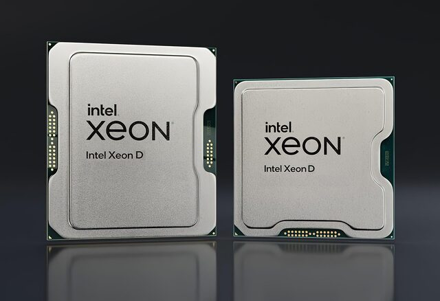

Feb 2023-Today
My performance as intern was good enough to be rehired as a CPU Design Verification Engineer where I have been working on the design verification of a Branch Prediction Unit (BPU). My team have been developing an impressive simulation software of this BPU from the scratch. I cannot elaborate, but I'm using Python, SystemVerilog, C++ and GitHub on a regular basis.
I have learned a lot in this role and my computer science skills have got an incredible boost: CI/CD, x86 computer (micro)architecture, assembly and Intel's software model, algorithms and data structures, design patterns, and even Deep Learning and Machine Learning Engineering. Shout-out to the AI experts at Intel who have started an internal AI program which I have been enrolled twice. I took the Deep Learning class (2023), earning this badge. Now (2024), I am a student of the Machine Learning Engineering class.
Jan 2022-Jan 2023
In 2021 I was looking for my first job and my target was Intel. In college I had written a lot of Verilog and Vhdl code for FPGAs, including 2 different CPU microarchitectures, so I wanted to corporately work on presilicon design. Finally, I was hired at Intel with a one-year contract performing as Presilicon Engineering Intern. In my internship, I worked on the design verification of the Quick Assist Technology of Granite Rapids D.
Aug 2022-Feb 2023
Since I graduated from a public University, I had to work for 6 months in a public institution. CIMAT or Centro de Investigación en Matemáticas (Research Center in Mathematics) is a public research center member of CONAHCyT (National Council of Science and Technology). At CIMAT, I worked on building a testbed, enabling robotics platforms such as AutoMiny, ran ROS Workshops and collaborated with graduate students.
Contact me for inquiries and collaborations:
ealarralde@gmail.com